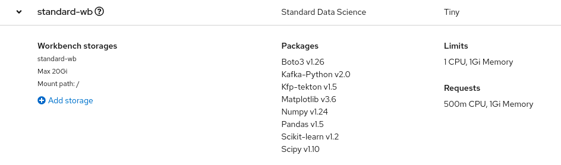

Customizing Workbenches
RHODS provides preconfigured notebook images to create workbenches.
Each of these images is designed to support your data science workflow in specific and popular technological stacks.
For example, if you plan to work with PyTorch, then you might want to use the PyTorch image.
The notebook image that you pick, however, might not include all the libraries that you need for your project. You might need a library that is not included in any of the images, or you might need a different set of libraries. Or perhaps, you just need a different version of a specific library, or even a different version of Python.
In this case, you have two options:
-
Create a workbench from the image that is closer to your needs and then install the required packages and versions in the workbench via JuypterLab.
-
Prepare a custom notebook image and add it to RHODS.
This course covers the first option. The second option is covered in the Red Hat OpenShift Data Science Administration course.
Supported Notebook Images
RHODS ships with a collection of notebooks images, which are optimized and supported by Red Hat and independent software vendors (ISVs). These images are designed for data scientists, providing them with the necessary tools to start working quickly. Moreover, Red Hat provides support for these images for at least one year, and releases major versions of each image typically every six months.
By default, RHODS includes these images:
-
CUDA
-
Standard Data Science
-
TensorFlow
-
PyTorch
-
Minimal Python
-
TrustyAI
These images are regular container images. The source Dockerfiles for these images are available at the red-hat-data-services/notebooks GitHub repository.
These images are also available in the Quay.io registry at https://quay.io/organization/modh. RHODS tracks these images by using ImageStreams that point to the notebook images available in Quay. You can inspect the available images by running the following command:
$ oc get imagestream -n redhat-ods-applications NAME IMAGE REPOSITORY TAGS UPDATED pytorch default-route-openshift-image-registry.apps.rhods-internal.61tk.p1.openshiftapps.com/redhat-ods-applications/pytorch 2023.1,1.2-cuda-11.4,2023.1-cuda-11.7 + 3 more... 6 weeks ago s2i-generic-data-science-notebook default-route-openshift-image-registry.apps.rhods-internal.61tk.p1.openshiftapps.com/redhat-ods-applications/s2i-generic-data-science-notebook 2023.1,1.2,py3.9-v2,py3.8-v1 6 weeks ago s2i-minimal-notebook default-route-openshift-image-registry.apps.rhods-internal.61tk.p1.openshiftapps.com/redhat-ods-applications/s2i-minimal-notebook 2023.1,1.2,py3.9-v2,py3.8-v1 6 weeks ago tensorflow default-route-openshift-image-registry.apps.rhods-internal.61tk.p1.openshiftapps.com/redhat-ods-applications/tensorflow 2023.1,1.2,2023.1-cuda-11.8,1.2-cuda-11.4 + 2 more... 6 weeks ago ...
For more information about notebook images, refer to the Notebook images for data scientists section in the Red Hat OpenShift Data Science documentation.
Exercise: Customizing Workbenches with JupyterLab
To use JupyterLab for customizing a workbench, follow these steps:
-
In a new or an existing data science project, create a
Standard Data Scienceworkbench. -
In the project dashboard, click the > icon of the workbench to expand its details. Verify the list of packages included in the workbench.
 -
Open the workbench. In JupyterLab, clone the https://github.com/RedHatQuickCourses/rhods-qc-apps repository.
-
Open the
1.intro/chapter3/customize/notebooks-customize.ipynbnotebook and follow the instructions.